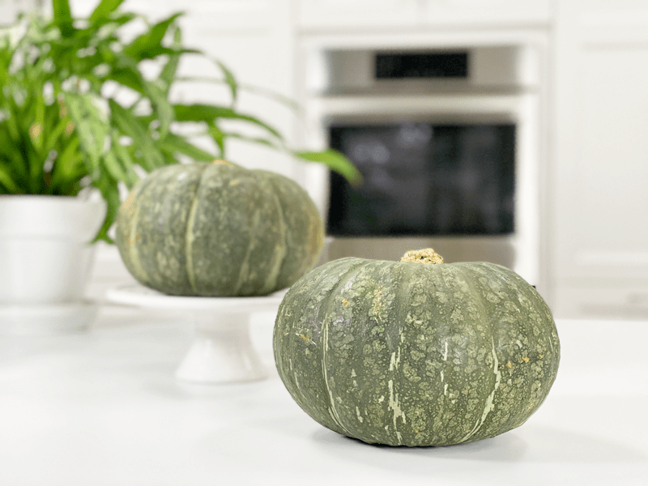
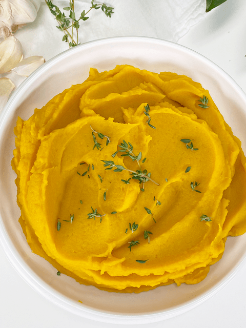

Kabocha Squash Mash | Baked |Oil-free
After an hour in the oven, it slices like buttah, as a gorgeous plume of steam bursts forth as the wedges fall away. A few passes with a spoon to remove the seeds, a quick blend in the food processor, and you’ve got a unique, healthy side dish of mashed kabocha squash!

I had never given this particular squash a second glance in my first forty-some years of life. Thank goodness for the gained wisdom one acquires over the years and the desire to try new foods. Growing up, I only knew of Halloween pumpkins and acorn squash. My mom baked those a lot, smoothing them with butter. But other than that, I never gave squash much thought. I always thought that they were for those health nuts! Well, thank goodness I am now a health nut!
The idea of preparing them had always intimidated me. A typical knife won’t really do the trick unless you are experienced and comfortable around sharp knives. Though I spent some time thinking of creative ways to use my husband’s power tools, drill press, hacksaw, bandsaw, chainsaw, sledgehammer–I just decided that they really didn’t need to be in my diet anyway!
But one day, while feeling adventurous in the grocery store, I selected one, tossing it into the cart like Bobby Flay with a million ideas for how I wanted to prepare it (NOT)! I had all the confidence in the world…until I got home, removed it from the shopping bag, and set it on the counter in front of me. There it sat, looking like a small green pumpkin with an attitude. The dark-green skin was thick and hard as I poked it. It didn’t giggle like the Pillsbury Dough Boy.
I wasn’t in favor of losing a digit that afternoon, so I preheated the oven, jabbed the knife tip into the thick skin to create vent holes, and slid it into the oven WHOLE! Roughly one hour later, I pulled it out, allowed it to cool a bit, then with a knife, I literally peeled the skin off. Heck, this wasn’t so bad after all. The flesh was a vibrant orange color. I snuck a bite and quickly realized that it resembled a pairing of a sweet potato and butternut squash. The flesh was super creamy and sweet, not watery like some varieties. I was sold, as this became and remained my favorite type of squash.

Health Benefits
- In one cup of cooked kabocha squash, there are roughly 49 calories, 12 grams of carbohydrate, 2.7 grams of fiber, and about 5 grams of naturally occurring sugar.
- Kabocha squash is considered a complex carbohydrate, which our bodies need for several important functions such as generating energy, optimal digestion, and healthy gut flora.
- Kabocha squash is an excellent source of vitamin A (it provides almost 300% of the daily value for a 2,000-calorie diet).
- It also a good source of vitamin C and provides small amounts of iron, calcium, some B vitamins, potassium, and magnesium.
- The rind of the kabocha will soften as the squash cooks and is entirely edible.
- The seeds are wonderful roasted, too, just like pumpkin seeds, so don’t toss them!
- Kabocha squash is a resistant starch–a concept I briefly talked about in my baked potato post. Click (here) to read about it. In some cooked foods (such as kabocha squash), resistant starch is created during cooling. Cooking triggers starch to absorb water and swell, and as it slowly cools, portions of the starch become crystallized into the form that resists digestion. Cooling either at room temperature or in the refrigerator will raise resistant starch levels.
Selection and Storage
Like other winter squash, kabocha is best in the fall season but can be found year-round at grocery stores, especially Asian or Japanese markets. When purchasing, look for squash that has hard, thick skin, feels heavy for its size, and doesn’t have any sign of mold or squishy spots. It is best to keep whole, uncut squash in a cool, dry place. It will keep for as long as three months.
Mashed Kabocha Squash Serving Ideas
- Enjoy AS-IS if you are omitting fats from your diet.
- Combine it with a little coconut milk, honey, and cinnamon to create a satisfying dessert without any guilt.
- Because of its natural sweetness, add a dollop to your morning oatmeal, pancake batter, and smoothies.
- Sprinkle with raisins, a dash of cinnamon, and add a splash of plant-based milk.
- Great baby-food puree.
- Serve as a side dish with fresh chives sprinkled on top.

Ingredients
Yields 6 cups mashed
- 1 kabocha squash
- 3/4 cup plant-based milk
- 1/4 tsp sea salt
Preparation
- Preheat the oven to 400 degrees (F).
- Place the squash on a baking sheet and pierce the flesh with a knife tip (vent holes) and roast until you can easily pierce it with a fork
- A standard 2-3 pound squash takes only an hour in a 400 degree (F) oven.
- I used a 4.8 lb squash (before cooking) to get the yield that is mentioned above. Which yielded 3 lbs of edible squash
- Adjust the amount of plant-based milk you use, depending on the size of the squash.
- Allow the squash to slightly cool so you can handle it with your hands without burning yourself.
- Cut a thin layer off of the top and then peel the skin down to the base in strips.
- Cut in half, scoop out the seeds, and place the flesh of the squash into the food processor, fitted with the “S” blade.
- Process the squash, plant-based milk, and salt just long enough to create a creamy puree.
- I used oat milk, but any type would work. Add just enough to create a thick mashed-potato-like consistency.
- Enjoy immediately or store in the fridge or freezer.
Food Storage
When it comes to storing hot foods, we have a 2-hour window. You don’t want to put piping hot foods directly into the refrigerator. However, If you leave food out to cool and forget about it you should, after 2 hours, throw it away to prevent the growth of bacteria. (source) Large amounts should be divided into smaller portions and put in shallow covered containers for quicker cooling in a refrigerator that is set to 40 degrees (F) or below.
- Fridge – In a sealed container, it will keep for up to 5 days.
- Freezer – You can also freeze the squash mash in individual or meal-sized portions for up to 3 months.
© AmieSue.com